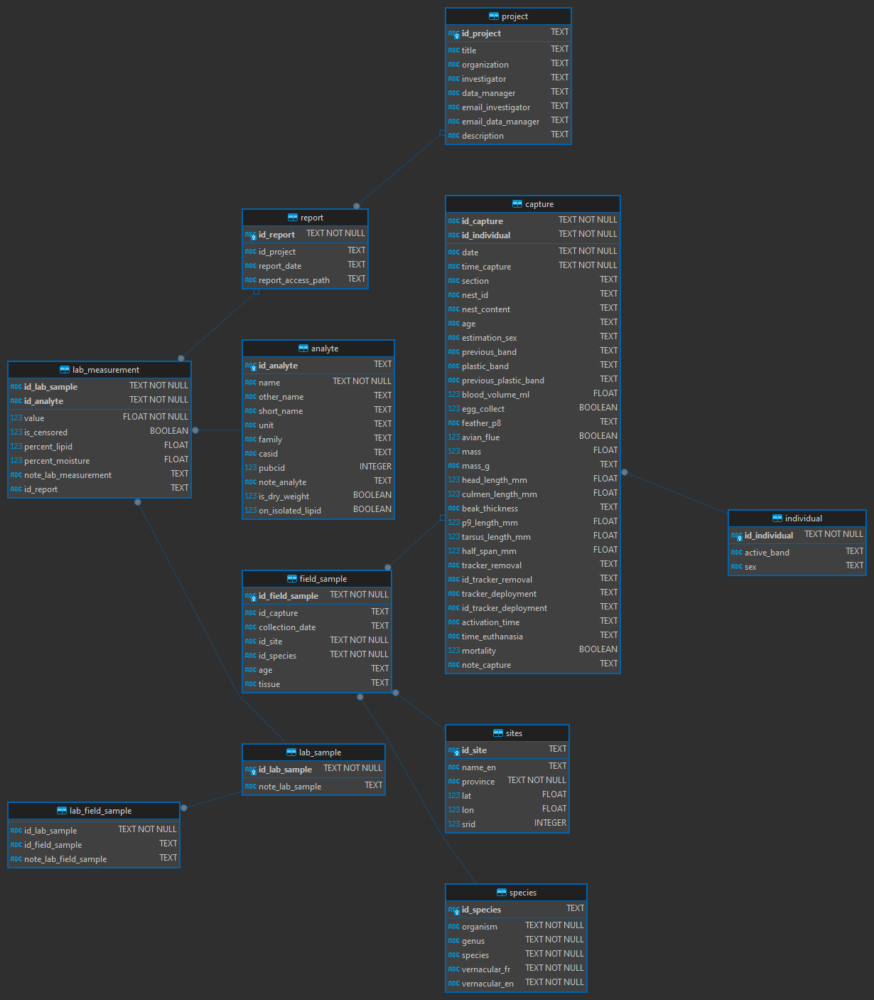

install.packages(c("RSQLite", "DBI"))Database structure
Entity-relationships diagram

Database creation
Install the following dependancies. Packages DBI and RSQlite are R packages proving functions to connect and execute SQL instructions such as table creation.
We first create or connect to an existing sqlite database.
con <- DBI::dbConnect(RSQLite::SQLite(), "./contaminants-rlavoie-eccc.sqlite")We then send all the SQL instructions stored in sql/db_create_ddl.sql file with DBI::dbExecute().
db_ddl_sql <- strsplit(paste(readLines("sql/db_create_ddl.sql"), collapse = "\n"), ";\n")[[1]]
purrr::walk(db_ddl_sql, \(x) DBI::dbExecute(con, x))SQL script
Here is the content of the SQL instructions file:
PRAGMA foreign_keys = ON;
DROP TABLE IF EXISTS lab_field_sample;
DROP TABLE IF EXISTS lab_measurement;
DROP TABLE IF EXISTS lab_sample;
DROP TABLE IF EXISTS field_sample;
DROP TABLE IF EXISTS capture;
DROP TABLE IF EXISTS species;
DROP TABLE IF EXISTS sites;
DROP TABLE IF EXISTS report;
DROP TABLE IF EXISTS project;
DROP TABLE IF EXISTS individual;
DROP TABLE IF EXISTS analyte;
-- analyte definition
CREATE TABLE analyte -- Create table which contains analyte description provided by the lab
(
id_analyte TEXT PRIMARY KEY,
name TEXT NOT NULL,
other_name TEXT,
short_name TEXT,
unit TEXT,
family TEXT,
casid TEXT,
pubcid INTEGER,
note_analyte TEXT,
is_dry_weight BOOLEAN CHECK (is_dry_weight IN (0, 1)),
on_isolated_lipid BOOLEAN CHECK (on_isolated_lipid IN (0, 1))
);
-- individual definition
CREATE TABLE individual -- Create a new table which document informations on individual
(
id_individual TEXT NOT NULL PRIMARY KEY,
active_band TEXT,
sex TEXT
);
-- lab_sample definition
CREATE TABLE lab_sample -- Create a new table which document all lab sample
-- Lab sample could be one or multiple field sample pooled
(
id_lab_sample TEXT NOT NULL PRIMARY KEY,
note_lab_sample TEXT
);
-- project definition
CREATE TABLE project -- Create table which contains project metadata description in association with field and/or lab samples
(
id_project TEXT PRIMARY KEY,
title TEXT,
organization TEXT,
investigator TEXT,
data_manager TEXT,
email_investigator TEXT,
email_data_manager TEXT,
description TEXT
);
-- sites definition
CREATE TABLE sites -- Create reference table for each site location
(
id_site TEXT PRIMARY KEY,
name_en TEXT,
province TEXT NOT NULL,
lat FLOAT,
lon FLOAT,
srid INTEGER
);
-- species definition
CREATE TABLE species -- Create a reference table for each species involved in study
(
id_species TEXT PRIMARY KEY,
organism TEXT NOT NULL,
genus TEXT NOT NULL,
species TEXT NOT NULL,
vernacular_fr TEXT NOT NULL,
vernacular_en TEXT NOT NULL
);
-- capture definition
CREATE TABLE capture -- Create a new table which document species capture event
(
id_capture TEXT NOT NULL,
id_individual TEXT NOT NULL,
date TEXT NOT NULL,
time_capture TEXT NOT NULL,
section TEXT,
nest_id TEXT,
nest_content TEXT,
age TEXT,
estimation_sex TEXT,
previous_band TEXT,
plastic_band TEXT,
previous_plastic_band TEXT,
blood_volume_ml FLOAT,
egg_collect BOOLEAN,
feather_p8 TEXT,
avian_flue BOOLEAN,
mass FLOAT,
mass_g TEXT,
head_length_mm FLOAT,
culmen_length_mm FLOAT,
beak_thickness TEXT,
p9_length_mm FLOAT,
tarsus_length_mm FLOAT,
half_span_mm FLOAT,
tracker_removal TEXT,
id_tracker_removal TEXT,
tracker_deployment TEXT,
id_tracker_deployment TEXT,
activation_time TEXT,
time_euthanasia TEXT,
mortality BOOLEAN,
note_capture TEXT,
UNIQUE(id_capture, id_individual) ON CONFLICT ROLLBACK,
FOREIGN KEY(id_individual) REFERENCES individual(id_individual) ON UPDATE CASCADE
);
-- field_sample definition
CREATE TABLE "field_sample" -- Create a new table which document collected field samples
(
id_field_sample TEXT NOT NULL PRIMARY KEY,
id_capture TEXT,
collection_date TEXT,
id_site TEXT NOT NULL,
id_species TEXT NOT NULL,
age TEXT,
tissue TEXT,
FOREIGN KEY(id_site) REFERENCES sites(id_site) ON UPDATE CASCADE,
FOREIGN KEY(id_species) REFERENCES species(id_species) ON UPDATE CASCADE,
FOREIGN KEY(id_capture) REFERENCES capture(id_capture) ON UPDATE CASCADE
);
-- lab_field_sample definition
CREATE TABLE lab_field_sample -- Create a new table which document all lab sample
-- Lab sample could be one or multiple field sample pooled
(
id_lab_sample TEXT NOT NULL,
id_field_sample TEXT,
note_lab_field_sample TEXT,
UNIQUE(id_lab_sample, id_field_sample) ON CONFLICT ROLLBACK,
FOREIGN KEY(id_field_sample) REFERENCES field_sample(id_field_sample) ON UPDATE CASCADE,
FOREIGN KEY(id_lab_sample) REFERENCES lab_sample(id_lab_sample) ON UPDATE CASCADE
);
-- report definition
CREATE TABLE report -- Create table which contains project metadata description in association with field and/or lab samples
(
id_report TEXT NOT NULL PRIMARY KEY,
id_project TEXT,
report_date TEXT,
report_access_path TEXT,
FOREIGN KEY(id_project) REFERENCES project(id_project) ON UPDATE CASCADE
);
-- lab_measurement definition
CREATE TABLE "lab_measurement" -- Create a new table which contains lab measurements
(
id_lab_sample TEXT NOT NULL,
id_analyte TEXT NOT NULL,
value FLOAT NOT NULL,
is_censored BOOLEAN CHECK (is_censored IN (0, 1)) DEFAULT 0,
percent_lipid FLOAT,
percent_moisture FLOAT,
note_lab_measurement TEXT, id_report text,
UNIQUE (id_lab_sample, id_analyte) ON CONFLICT ROLLBACK,
FOREIGN KEY(id_lab_sample) REFERENCES lab_sample(id_lab_sample) ON UPDATE CASCADE,
FOREIGN KEY(id_analyte) REFERENCES analyte(id_analyte) ON UPDATE CASCADE,
FOREIGN KEY (id_report) REFERENCES report(id_report) ON UPDATE CASCADE
);